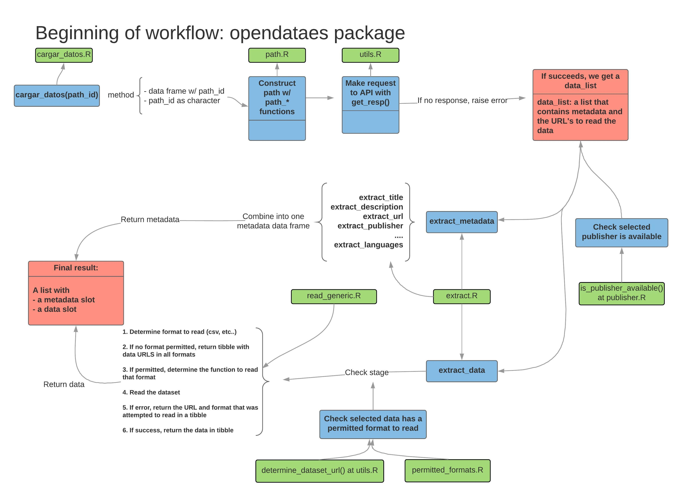
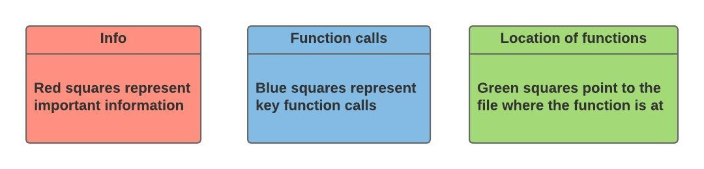
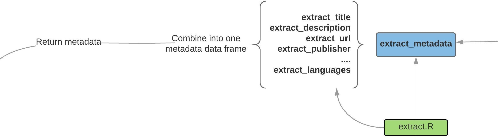

Ins and outs of opendataes: a guide for collaboration
Jorge Cimentada and Jorge Lopez
2018-12-28
Source:vignettes/ins-and-outs-of-opendataes-guide-for-collaboration.Rmd
ins-and-outs-of-opendataes-guide-for-collaboration.Rmdopendataes is package that was ultimately though of to be maintained by the R community. The package is extremely useful in automating some tasks but also limited in some aspects. This vignette is aimed at describing in detail how the package works so that new users can understand the inner workings of opendataes and contribute more easily.
How does this work anyway?

Woah, that’s a lot of information. The package has three steps:
- Preparing the path and requesting data from the API
- Extracting the metadata
- Extracting the data
In the image above, the first step is the horizontal diagram at the top while the last two steps are the horizontal diagrams at the bottom. We’ll go step by step and tear it apart. First, let’s look at the legend of each box

I’ll explain it further just to make it clearer. The red boxes are information boxes. That is, they don’t document a function call in the process, so just take it as an explanation of the process. The blue boxes are the most important because they document the function calls. That is, each of the blue boxes represent a function being called that represents an important step in the process of reading the data. Finally, the green boxes represent where the function in the blue box is at in the package structure. This is handy when you want to read through the source code of the function without much hassle.
That said, let’s explore the first step in the process.
Preparing and calling the API

The first step begins with openes_load, which is the main function. It accepts the typical path_id of the dataset as a string (read the README or other vignette for some simpler cases). For example:
library(opendataes)
path_id <- 'l01080193-elecciones-al-parlamento-europeo-sobre-electores'
openes_load(path_id)However, it also has a method for a dataframe, as the graph suggests. This method is strictly aimed at dataframes returned by openes_keywords so it checks the format of the dataframe before hand.
openes_load
#> function (x, encoding = "UTF-8", guess_encoding = TRUE, ...)
#> {
#> x <- if (is.data.frame(x))
#> check_keywords_df(x)
#> else x
#> UseMethod("openes_load", x)
#> }
#> <bytecode: 0x0000000019f181a0>
#> <environment: namespace:opendataes>openes_load redirects to check_keywords_df, an internal function that checks whether the dataframe has the path_id column, among other checks. Finally, once the check succeeds, it assigns the dataframe a class datos_gob_es_keywords and passes it to the method dispatch UseMethod. The method for the class datos_gob_es_keywords merely subsets the path_id column to get the string and read it using the character method of openes_load:
opendataes:::openes_load.datos_gob_es_keywords
#> function (x, encoding = "UTF-8", guess_encoding = TRUE, ...)
#> {
#> openes_load(x$path_id, encoding, guess_encoding, ...)
#> }
#> <bytecode: 0x000000001a3696c0>
#> <environment: namespace:opendataes>So we end up with the same call as if we would’ve called the main argument with a string containing the path_id. As the diagram suggests, you can find these functions in the R script R/openes_load.R in the Github repository. Once openes_load passes the string as the main argument it constructs the whole path for the API using a family of functions found in R/path.R. More concretely, it defines the complete path using path_dataset_id(path_id) which returns the direct path of the API to query the data set.
At the end of this preprocessing step, openes_load passes this complete path to get_resp which sends a GET request to the API.
We can see the whole process in the character method of openes_load:
opendataes:::openes_load.character
#> function (x, encoding = "UTF-8", guess_encoding = TRUE, ...)
#> {
#> if (!is.character(x) || length(x) > 1)
#> stop("`x` must be a character of length 1")
#> if (!is.character(encoding) || length(encoding) > 1)
#> stop("`encoding` must be a character of length 1")
#> if (!is.logical(guess_encoding) || length(guess_encoding) >
#> 1)
#> stop("`guess_encoding` must be a logical of length 1")
#> raw_json <- get_resp(path_dataset_id(x))
#> if (!data_list_correct(raw_json))
#> return(list())
#> data_list <- raw_json$result$items[[1]]
#> if (!is_publisher_available(data_list)) {
#> stop("Publisher not available. Please check publishers_available() to get the available ones.")
#> }
#> returned_list <- structure(list(metadata = extract_metadata(data_list),
#> data = suppress_all(extract_data(data_list, encoding,
#> guess_encoding, ...))), class = "datos_gob_es")
#> returned_list
#> }
#> <bytecode: 0x000000001a4f33b8>
#> <environment: namespace:opendataes>The function get_resp returns a list with the response from the API, which we’ve interally called a data_list. You will encounter this name in several places in the package as argument names or in the internal documentation. The data_list is just a list that contains the metadata of the dataset and the links to the data from the original publisher (for example, the direct links to the data from the Ayuntamiento de Madrid or Málaga) along with some information from the GET request.
To visualize a real example of a data_list we can call it directly using the previous path_id:
# Note that these specific function calls might change in the future,
# but for the sake of showing the format of a data_list we run it.
data_list <- opendataes:::get_resp(opendataes:::path_dataset_id(path_id))
data_list
#> $format
#> [1] "linked-data-api"
#>
#> $version
#> [1] "0.2"
#>
#> $result
#> $result$`_about`
#> [1] "http://datos.gob.es/apidata/catalog/dataset/l01080193-elecciones-al-parlamento-europeo-sobre-electores.json"
#>
#> $result$definition
#> [1] "http://datos.gob.es/apidata/catalog/meta/dataset/_id.json"
#>
#> $result$extendedMetadataVersion
#> [1] "http://datos.gob.es/apidata/catalog/dataset/l01080193-elecciones-al-parlamento-europeo-sobre-electores.json?_metadata=all"
#>
#> $result$first
#> [1] "http://datos.gob.es/apidata/catalog/dataset/l01080193-elecciones-al-parlamento-europeo-sobre-electores.json?_page=0"
#>
#> $result$hasPart
#> [1] "http://datos.gob.es/apidata/catalog/dataset/l01080193-elecciones-al-parlamento-europeo-sobre-electores.json"
#>
#> $result$isPartOf
#> [1] "http://datos.gob.es/apidata/catalog/dataset/l01080193-elecciones-al-parlamento-europeo-sobre-electores.json"
#>
#> $result$items
#> $result$items[[1]]
#> $result$items[[1]]$`_about`
#> [1] "http://datos.gob.es/catalogo/l01080193-elecciones-al-parlamento-europeo-sobre-electores"
#>
#> $result$items[[1]]$accrualPeriodicity
#> [1] "http://datos.gob.es/catalogo/l01080193-elecciones-al-parlamento-europeo-sobre-electores/Frequency"
#>
#> $result$items[[1]]$description
#> $result$items[[1]]$description[[1]]
#> $result$items[[1]]$description[[1]]$`_value`
#> [1] "Elecciones al Parlamento Europeo. % sobre electores"
#>
#> $result$items[[1]]$description[[1]]$`_lang`
#> [1] "es"
#>
#>
#> $result$items[[1]]$description[[2]]
#> $result$items[[1]]$description[[2]]$`_value`
#> [1] "Eleccions al Parlament Europeu. % sobre electors"
#>
#> $result$items[[1]]$description[[2]]$`_lang`
#> [1] "ca"
#>
#>
#> $result$items[[1]]$description[[3]]
#> $result$items[[1]]$description[[3]]$`_value`
#> [1] "European Parliament elections. % of electors"
#>
#> $result$items[[1]]$description[[3]]$`_lang`
#> [1] "en"
#>
#>
#>
#> $result$items[[1]]$distribution
#> $result$items[[1]]$distribution[[1]]
#> $result$items[[1]]$distribution[[1]]$`_about`
#> [1] "http://datos.gob.es/catalogo/l01080193-elecciones-al-parlamento-europeo-sobre-electores/resource/3e7867a7-f2e7-46c9-981d-a443f129931e"
#>
#> $result$items[[1]]$distribution[[1]]$accessURL
#> [1] "http://opendata-ajuntament.barcelona.cat/resources/opendata/2014_europees-a201402.csv"
#>
#> $result$items[[1]]$distribution[[1]]$format
#> $result$items[[1]]$distribution[[1]]$format$`_about`
#> [1] "http://datos.gob.es/catalogo/l01080193-elecciones-al-parlamento-europeo-sobre-electores/resource/3e7867a7-f2e7-46c9-981d-a443f129931e/format"
#>
#> $result$items[[1]]$distribution[[1]]$format$type
#> [1] "http://purl.org/dc/terms/IMT"
#>
#> $result$items[[1]]$distribution[[1]]$format$value
#> [1] "text/csv"
#>
#>
#> $result$items[[1]]$distribution[[1]]$identifier
#> [1] "http://opendata-ajuntament.barcelona.cat/data/dataset/europees-a02/resource/4a7600b9-4561-4ee4-a605-22c9690dff60"
#>
#> $result$items[[1]]$distribution[[1]]$title
#> $result$items[[1]]$distribution[[1]]$title[[1]]
#> [1] "2014_europees-a02.csv"
#>
#> $result$items[[1]]$distribution[[1]]$title[[2]]
#> [1] "2014_europees-a02.csv"
#>
#> $result$items[[1]]$distribution[[1]]$title[[3]]
#> [1] "2014_europees-a02.csv"
#>
#>
#> $result$items[[1]]$distribution[[1]]$type
#> [1] "http://www.w3.org/ns/dcat#Distribution"
#>
#>
#> $result$items[[1]]$distribution[[2]]
#> $result$items[[1]]$distribution[[2]]$`_about`
#> [1] "http://datos.gob.es/catalogo/l01080193-elecciones-al-parlamento-europeo-sobre-electores/resource/513ee9c0-b354-40ba-9900-fe52af7de14f"
#>
#> $result$items[[1]]$distribution[[2]]$accessURL
#> [1] "http://opendata-ajuntament.barcelona.cat/data/dataset/bf17828d-caa1-4454-b03d-cd9a1affcc2d/resource/8a35709b-97d4-433c-94c6-699b3482457e/download/2014_europees-a201402.xls"
#>
#> $result$items[[1]]$distribution[[2]]$format
#> $result$items[[1]]$distribution[[2]]$format$`_about`
#> [1] "http://datos.gob.es/catalogo/l01080193-elecciones-al-parlamento-europeo-sobre-electores/resource/513ee9c0-b354-40ba-9900-fe52af7de14f/format"
#>
#> $result$items[[1]]$distribution[[2]]$format$type
#> [1] "http://purl.org/dc/terms/IMT"
#>
#> $result$items[[1]]$distribution[[2]]$format$value
#> [1] "application/vnd.ms-excel"
#>
#>
#> $result$items[[1]]$distribution[[2]]$identifier
#> [1] "http://opendata-ajuntament.barcelona.cat/data/dataset/europees-a02/resource/8a35709b-97d4-433c-94c6-699b3482457e"
#>
#> $result$items[[1]]$distribution[[2]]$title
#> $result$items[[1]]$distribution[[2]]$title[[1]]
#> [1] "2014_europees-a02.xls"
#>
#> $result$items[[1]]$distribution[[2]]$title[[2]]
#> [1] "2014_europees-a02.xls"
#>
#> $result$items[[1]]$distribution[[2]]$title[[3]]
#> [1] "2014_europees-a02.xls"
#>
#>
#> $result$items[[1]]$distribution[[2]]$type
#> [1] "http://www.w3.org/ns/dcat#Distribution"
#>
#>
#> $result$items[[1]]$distribution[[3]]
#> $result$items[[1]]$distribution[[3]]$`_about`
#> [1] "http://datos.gob.es/catalogo/l01080193-elecciones-al-parlamento-europeo-sobre-electores/resource/53c78a3a-3898-4812-bbf9-f21e93ffe660"
#>
#> $result$items[[1]]$distribution[[3]]$accessURL
#> [1] "http://opendata-ajuntament.barcelona.cat/resources/opendata/2009_europees-a200902.xls"
#>
#> $result$items[[1]]$distribution[[3]]$format
#> $result$items[[1]]$distribution[[3]]$format$`_about`
#> [1] "http://datos.gob.es/catalogo/l01080193-elecciones-al-parlamento-europeo-sobre-electores/resource/53c78a3a-3898-4812-bbf9-f21e93ffe660/format"
#>
#> $result$items[[1]]$distribution[[3]]$format$type
#> [1] "http://purl.org/dc/terms/IMT"
#>
#> $result$items[[1]]$distribution[[3]]$format$value
#> [1] "application/vnd.ms-excel"
#>
#>
#> $result$items[[1]]$distribution[[3]]$identifier
#> [1] "http://opendata-ajuntament.barcelona.cat/data/dataset/europees-a02/resource/fa03afa5-54e7-4cf2-8ee6-505e263014c0"
#>
#> $result$items[[1]]$distribution[[3]]$title
#> $result$items[[1]]$distribution[[3]]$title[[1]]
#> [1] "2009_europees-a02.xls"
#>
#> $result$items[[1]]$distribution[[3]]$title[[2]]
#> [1] "2009_europees-a02.xls"
#>
#> $result$items[[1]]$distribution[[3]]$title[[3]]
#> [1] "2009_europees-a02.xls"
#>
#>
#> $result$items[[1]]$distribution[[3]]$type
#> [1] "http://www.w3.org/ns/dcat#Distribution"
#>
#>
#> $result$items[[1]]$distribution[[4]]
#> $result$items[[1]]$distribution[[4]]$`_about`
#> [1] "http://datos.gob.es/catalogo/l01080193-elecciones-al-parlamento-europeo-sobre-electores/resource/6f277a96-e603-42bd-a9a4-03b0dfd63cf2"
#>
#> $result$items[[1]]$distribution[[4]]$accessURL
#> [1] "http://opendata-ajuntament.barcelona.cat/resources/opendata/2009_europees-a200902.csv"
#>
#> $result$items[[1]]$distribution[[4]]$format
#> $result$items[[1]]$distribution[[4]]$format$`_about`
#> [1] "http://datos.gob.es/catalogo/l01080193-elecciones-al-parlamento-europeo-sobre-electores/resource/6f277a96-e603-42bd-a9a4-03b0dfd63cf2/format"
#>
#> $result$items[[1]]$distribution[[4]]$format$type
#> [1] "http://purl.org/dc/terms/IMT"
#>
#> $result$items[[1]]$distribution[[4]]$format$value
#> [1] "text/csv"
#>
#>
#> $result$items[[1]]$distribution[[4]]$identifier
#> [1] "http://opendata-ajuntament.barcelona.cat/data/dataset/europees-a02/resource/091436b0-f0fe-4f31-bffe-949d7502bbf4"
#>
#> $result$items[[1]]$distribution[[4]]$title
#> $result$items[[1]]$distribution[[4]]$title[[1]]
#> [1] "2009_europees-a02.csv"
#>
#> $result$items[[1]]$distribution[[4]]$title[[2]]
#> [1] "2009_europees-a02.csv"
#>
#> $result$items[[1]]$distribution[[4]]$title[[3]]
#> [1] "2009_europees-a02.csv"
#>
#>
#> $result$items[[1]]$distribution[[4]]$type
#> [1] "http://www.w3.org/ns/dcat#Distribution"
#>
#>
#>
#> $result$items[[1]]$identifier
#> [1] "http://opendata-ajuntament.barcelona.cat/data/dataset/europees-a02"
#>
#> $result$items[[1]]$issued
#> [1] "mié, 13 mar 2013 23:00:00 GMT+0000"
#>
#> $result$items[[1]]$keyword
#> $result$items[[1]]$keyword[[1]]
#> [1] "Año 2009"
#>
#> $result$items[[1]]$keyword[[2]]
#> [1] "Año 2014"
#>
#> $result$items[[1]]$keyword[[3]]
#> [1] "Barrio"
#>
#> $result$items[[1]]$keyword[[4]]
#> [1] "Barrios Barcelona"
#>
#> $result$items[[1]]$keyword[[5]]
#> [1] "Baró de Viver"
#>
#> $result$items[[1]]$keyword[[6]]
#> [1] "Bon Pastor"
#>
#> $result$items[[1]]$keyword[[7]]
#> [1] "Can Baró"
#>
#> $result$items[[1]]$keyword[[8]]
#> [1] "Can Peguera"
#>
#> $result$items[[1]]$keyword[[9]]
#> [1] "Canyelles"
#>
#> $result$items[[1]]$keyword[[10]]
#> [1] "Ciutat Meridiana"
#>
#> $result$items[[1]]$keyword[[11]]
#> [1] "Diagonal Mar i el Front Marítim del Poblenou"
#>
#> $result$items[[1]]$keyword[[12]]
#> [1] "Elecciones europeas"
#>
#> $result$items[[1]]$keyword[[13]]
#> [1] "Electores"
#>
#> $result$items[[1]]$keyword[[14]]
#> [1] "Fort Pienc"
#>
#> $result$items[[1]]$keyword[[15]]
#> [1] "Horta"
#>
#> $result$items[[1]]$keyword[[16]]
#> [1] "Hostafrancs"
#>
#> $result$items[[1]]$keyword[[17]]
#> [1] "Les Roquetes"
#>
#> $result$items[[1]]$keyword[[18]]
#> [1] "Montbau"
#>
#> $result$items[[1]]$keyword[[19]]
#> [1] "Navas"
#>
#> $result$items[[1]]$keyword[[20]]
#> [1] "Pedralbes"
#>
#> $result$items[[1]]$keyword[[21]]
#> [1] "Poble-sec"
#>
#> $result$items[[1]]$keyword[[22]]
#> [1] "Poblenou"
#>
#> $result$items[[1]]$keyword[[23]]
#> [1] "Porcentaje"
#>
#> $result$items[[1]]$keyword[[24]]
#> [1] "Porta"
#>
#> $result$items[[1]]$keyword[[25]]
#> [1] "Provençals del Poblenou"
#>
#> $result$items[[1]]$keyword[[26]]
#> [1] "Sant Andreu"
#>
#> $result$items[[1]]$keyword[[27]]
#> [1] "Sant Antoni"
#>
#> $result$items[[1]]$keyword[[28]]
#> [1] "Sant Genís dels Agudells"
#>
#> $result$items[[1]]$keyword[[29]]
#> [1] "Sant Gervasi-Galvany"
#>
#> $result$items[[1]]$keyword[[30]]
#> [1] "Sant Gervasi-la Bonanova"
#>
#> $result$items[[1]]$keyword[[31]]
#> [1] "Sant Martí de Provençals"
#>
#> $result$items[[1]]$keyword[[32]]
#> [1] "Sant Pere"
#>
#> $result$items[[1]]$keyword[[33]]
#> [1] "Santa Caterina i la Ribera"
#>
#> $result$items[[1]]$keyword[[34]]
#> [1] "Sants"
#>
#> $result$items[[1]]$keyword[[35]]
#> [1] "Sants - Badal"
#>
#> $result$items[[1]]$keyword[[36]]
#> [1] "Sarrià"
#>
#> $result$items[[1]]$keyword[[37]]
#> [1] "Torre Baró"
#>
#> $result$items[[1]]$keyword[[38]]
#> [1] "Vallbona"
#>
#> $result$items[[1]]$keyword[[39]]
#> [1] "Vallcarca i els Penitents"
#>
#> $result$items[[1]]$keyword[[40]]
#> [1] "Vallvidrera"
#>
#> $result$items[[1]]$keyword[[41]]
#> [1] "Verdun"
#>
#> $result$items[[1]]$keyword[[42]]
#> [1] "Vilapicina i la Torre Llobeta"
#>
#> $result$items[[1]]$keyword[[43]]
#> [1] "el Baix Guinardó"
#>
#> $result$items[[1]]$keyword[[44]]
#> [1] "el Besòs i el Maresme"
#>
#> $result$items[[1]]$keyword[[45]]
#> [1] "el Camp d en Grassot i Gràcia Nova"
#>
#> $result$items[[1]]$keyword[[46]]
#> [1] "el Camp de l Arpa del Clot"
#>
#> $result$items[[1]]$keyword[[47]]
#> [1] "el Carmel"
#>
#> $result$items[[1]]$keyword[[48]]
#> [1] "el Clot"
#>
#> $result$items[[1]]$keyword[[49]]
#> [1] "el Coll"
#>
#> $result$items[[1]]$keyword[[50]]
#> [1] "el Congrés i els Indians"
#>
#> $result$items[[1]]$keyword[[51]]
#> [1] "el Guinardó"
#>
#> $result$items[[1]]$keyword[[52]]
#> [1] "el Gòtic"
#>
#> $result$items[[1]]$keyword[[53]]
#> [1] "el Parc i la Llacuna del Poblenou"
#>
#> $result$items[[1]]$keyword[[54]]
#> [1] "el Putxet i el Farró"
#>
#> $result$items[[1]]$keyword[[55]]
#> [1] "el Raval"
#>
#> $result$items[[1]]$keyword[[56]]
#> [1] "el Tibidabo i les Planes"
#>
#> $result$items[[1]]$keyword[[57]]
#> [1] "el Turó de la Peira"
#>
#> $result$items[[1]]$keyword[[58]]
#> [1] "l Antiga Esquerra de l Eixample"
#>
#> $result$items[[1]]$keyword[[59]]
#> [1] "la Barceloneta"
#>
#> $result$items[[1]]$keyword[[60]]
#> [1] "la Bordeta"
#>
#> $result$items[[1]]$keyword[[61]]
#> [1] "la Clota"
#>
#> $result$items[[1]]$keyword[[62]]
#> [1] "la Dreta de l Eixample"
#>
#> $result$items[[1]]$keyword[[63]]
#> [1] "la Font d en Fargues"
#>
#> $result$items[[1]]$keyword[[64]]
#> [1] "la Font de la Guatlla"
#>
#> $result$items[[1]]$keyword[[65]]
#> [1] "la Guineueta"
#>
#> $result$items[[1]]$keyword[[66]]
#> [1] "la Marina de Port"
#>
#> $result$items[[1]]$keyword[[67]]
#> [1] "la Marina del Prat Vermell"
#>
#> $result$items[[1]]$keyword[[68]]
#> [1] "la Maternitat i Sant Ramon"
#>
#> $result$items[[1]]$keyword[[69]]
#> [1] "la Nova Esquerra de l Eixample"
#>
#> $result$items[[1]]$keyword[[70]]
#> [1] "la Prosperitat"
#>
#> $result$items[[1]]$keyword[[71]]
#> [1] "la Sagrada Família"
#>
#> $result$items[[1]]$keyword[[72]]
#> [1] "la Sagrera"
#>
#> $result$items[[1]]$keyword[[73]]
#> [1] "la Salut"
#>
#> $result$items[[1]]$keyword[[74]]
#> [1] "la Teixonera"
#>
#> $result$items[[1]]$keyword[[75]]
#> [1] "la Trinitat Nova"
#>
#> $result$items[[1]]$keyword[[76]]
#> [1] "la Trinitat Vella"
#>
#> $result$items[[1]]$keyword[[77]]
#> [1] "la Vall d Hebron"
#>
#> $result$items[[1]]$keyword[[78]]
#> [1] "la Verneda i la Pau"
#>
#> $result$items[[1]]$keyword[[79]]
#> [1] "la Vila Olímpica del Poblenou"
#>
#> $result$items[[1]]$keyword[[80]]
#> [1] "la Vila de Gràcia"
#>
#> $result$items[[1]]$keyword[[81]]
#> [1] "les Corts"
#>
#> $result$items[[1]]$keyword[[82]]
#> [1] "les Tres Torres"
#>
#>
#> $result$items[[1]]$publisher
#> [1] "http://datos.gob.es/recurso/sector-publico/org/Organismo/L01080193"
#>
#> $result$items[[1]]$references
#> $result$items[[1]]$references[[1]]
#> [1] "http://www.bcn.cat/estadistica/angles/dades/barris/telec/eur/index.htm"
#>
#> $result$items[[1]]$references[[2]]
#> [1] "http://www.bcn.cat/estadistica/castella/dades/barris/telec/eur/index.htm"
#>
#> $result$items[[1]]$references[[3]]
#> [1] "http://www.bcn.es/estadistica/catala/dades/barris/telec/eur/index.htm"
#>
#>
#> $result$items[[1]]$theme
#> [1] "http://datos.gob.es/kos/sector-publico/sector/sector-publico"
#>
#> $result$items[[1]]$title
#> $result$items[[1]]$title[[1]]
#> [1] "Elecciones al Parlamento Europeo. % sobre electores de la ciudad de Barcelona"
#>
#> $result$items[[1]]$title[[2]]
#> [1] "Eleccions al Parlament Europeu. % sobre electors de la ciutat de Barcelona"
#>
#> $result$items[[1]]$title[[3]]
#> [1] "European Parliament elections. % of electors of the city of Barcelona"
#>
#>
#> $result$items[[1]]$type
#> [1] "http://www.w3.org/ns/dcat#Dataset"
#>
#>
#>
#> $result$itemsPerPage
#> [1] 10
#>
#> $result$page
#> [1] 0
#>
#> $result$startIndex
#> [1] 1
#>
#> $result$type
#> $result$type[[1]]
#> [1] "http://purl.org/linked-data/api/vocab#ListEndpoint"
#>
#> $result$type[[2]]
#> [1] "http://purl.org/linked-data/api/vocab#Page"Before we extract the metadata and data, openes_load checks that the data_list is in the expected format, because otherwise none of the functions in the package would work. If the data_list is not in the correct format, openes_load returns an empty list.
Note: opendataes really pushes for consistent outputs. That is, it usually returns a list with two slots containing the metadata and data and if the data poses some sort of problem, openes_load should return the same list with two slots but without the data itself. However, if the data_list is not in the correct format it means that the API is returning something odd in the first place. This is regardless of the quality, standardization or format of the dataset. In this scenario openes_load returns an empty list but this is open to debate. This is an area for improvements for new comers.
Getting back to the data_list, it is messy and not very intuitive. This is when we move to the second step of the diagram.
Extracting the metadata

The metadata is scattered around the data_list but it keeps consistent names so opendataes provides several extract_* functions that are present in the diagram. We combine all of these ‘helper’ functions into extract_metadata to provide a general tibble of metadata. In the example below, we need to dig deeper into the list structure of data_list to get to where the data actually is.
For example..
# This is the slot where the data is. This is the case
# even when there are several datasets to read.
# It is safe only to search HERE for the data
# and metadata
data_list <- data_list$result$items[[1]]
opendataes:::extract_metadata(data_list)
#> # A tibble: 3 x 8
#> keywords language description url date_issued date_modified
#> <chr> <chr> <chr> <chr> <dttm> <chr>
#> 1 Año 200~ es Elecciones~ http~ NA No modificat~
#> 2 Año 200~ ca Eleccions ~ http~ NA No modificat~
#> 3 Año 200~ en European P~ http~ NA No modificat~
#> # ... with 2 more variables: publisher <chr>, publisher_data_url <chr>Inside this function we’re just calling separate extract_* functions to grab each piece of metadata. For example..
keywords <- extract_keywords(data_list)
description <- extract_description(data_list)
languages <- extract_language(data_list)
url_path <- extract_url(data_list)Once that’s done, the metadata is ready. For more detailed readings of the source code, each of these functions are located in the R/extract.R path. Now we move on to the trickiest step: extracting the data.
Extracting the data

The first step is passing the data_list from above to extract_data which can be located at the path R/extract.R. The difficult part of reading the data is due to the fact that different publishers keep datasets with different formats. For example, the Ayuntamiento de Madrid might have a csv file with only one excel sheet in an organized tabular format but the Ayuntamiento de Arganda del Rey might have several sheets with several tables inside each sheet. There’s really nothing that can be done about that if the aim of the package is to scale the data reading process across several publishers. The chosen solution, we believe, is the most conservative: limit the publishers and formats that opendataes can read and increase these two as their standardization practices grow.
The first step that openes_load takes before calling extract_data functions is to check whether the data comes from our permitted publishers. If the dataset is not from an available publisher, it raises an error. This is done via opendataes:::is_publisher_available which extracts the publisher from the data_list and matches it with our list of available publishers.
The criteria we think best to include new publishers is to check by brute force whether they have patterns of standardization. For example, the first publisher we accepted as reliable was ‘Ayuntamiento of Barcelona’ because we repeatedly found ourselves reading datasets from the same format which were very consistent and easy to read. For the list of available publishers that opendataes can read, we can look at opendataes::publishers_available.
publishers_available
#> # A tibble: 10 x 2
#> publishers publisher_code
#> <chr> <chr>
#> 1 Ayuntamiento de Barcelona L01080193
#> 2 Ayuntamiento de Madrid L01280796
#> 3 Ayuntamiento de Valencia L01462508
#> 4 Ayuntamiento de Las Palmas de Gran Canaria L01350167
#> 5 Ayuntamiento de Bilbao L01480209
#> 6 Ayuntamiento de Zaragoza L01502973
#> 7 Ayuntamiento de Malaga L01290672
#> 8 Ayuntamiento de Gijon L01330241
#> 9 Ayuntamiento de Santander L01390759
#> 10 Ayuntamiento de Alcobendas L01280066This is one of the main areas were opendataes needs support. We are always welcoming pull requests that would allow us to read new publishers as long as we can have some sort of proof of consistency in their datasets.
The second problem, and very related to the previous, is the formats that opendataes can read. Because standardization across datasets is one of our main concerns, we are interested in reading formats which are consistent and predictable for reading purposes. Fortunately, around 70% of all datasets in datos.gob.es are csv files, a very standard format. For that reason, it is the first format that we give preference for reading. You can check the permitted formats with opendataes::permitted_formats.
permitted_formats
#> [1] "csv"This is one are where we are actively looking for new pull requests as we are interested in broadening the scope of formats that opendataes can read.
From the package’s perspective there are two things that can be done to further increase the number of publishers and formats: push each of our publishers for greater standardization and check whether we can read a reasonable number of file formats from a given publisher.
Having said that, the first thing that extract_data does is to check whether the selected dataset has any of the formats that opendataes can read. If it doesn’t, then it doesn’t attempt to read anything but merely returns the dataset’s URL’s in all the formats available. For example it returns a tibble like this one..
# $`unavailable_formats`
# A tibble: 13 x 3
# name format URL
# <chr> <chr> <chr>
# 1 2018_3T_CARRIL_BICI_CONST~ zip http://opendata-ajuntament.barcelona.cat/resources/bcn/2018_3T_CARRIL_BICI_CO~
# 2 CARRIL_BICI_CONSTRUCCIO.s~ NA http://opendata-ajuntament.barcelona.cat/resources/bcn/CARRIL_BICI_CONSTRUCCI~
# 3 CARRIL_BICI_CONSTRUCCIO.p~ asc http://opendata-ajuntament.barcelona.cat/resources/bcn/CARRIL_BICI_CONSTRUCCI~
# 4 2018_2T_CARRIL_BICI_CONST~ zip http://opendata-ajuntament.barcelona.cat/resources/bcn/2018_2T_CARRIL_BICI_CO~
# 5 CARRIL_BICI_CONSTRUCCIO.g~ json http://opendata-ajuntament.barcelona.cat/resources/bcn/CARRIL_BICI_CONSTRUCCI~
# 6 CARRIL_BICI_CONSTRUCCIO.z~ zip http://opendata-ajuntament.barcelona.cat/resources/bcn/CARRIL_BICI_CONSTRUCCI~
# 7 2017_4T_CARRIL_BICI_CONS.~ zip http://opendata-ajuntament.barcelona.cat/data/dataset/edee68e3-5ff1-43d0-b556~
# 8 2018_1T_CARRIL_BICI_CONS.~ zip http://opendata-ajuntament.barcelona.cat/data/dataset/edee68e3-5ff1-43d0-b556~
# 9 2017_3T_CARRIL_BICI_CONS.~ zip http://opendata-ajuntament.barcelona.cat/data/dataset/edee68e3-5ff1-43d0-b556~
# 10 CARRIL_BICI_CONSTRUCCIO.d~ asc http://opendata-ajuntament.barcelona.cat/resources/bcn/CARRIL_BICI_CONSTRUCCI~
# 11 CARRIL_BICI_CONSTRUCCIO.s~ NA http://opendata-ajuntament.barcelona.cat/resources/bcn/CARRIL_BICI_CONSTRUCCI~
# 12 2017_2T_CARRIL_BICI_CONS.~ zip http://opendata-ajuntament.barcelona.cat/data/dataset/edee68e3-5ff1-43d0-b556~
# 13 2017_1T_CARRIL_BICI_CONS.~ zip http://opendata-ajuntament.barcelona.cat/data/dataset/edee68e3-5ff1-43d0-b556~where the user would get each file name with it’s format and direct URL, in case they want to read it manually. In case the dataset has at least one of the permitted formats, then the process is different: extract_data extracts all URL’s of the permitted format. As an ilustrative example, a dataset could have several files as can be seen in the image below:

The above image shows the accidents in the city of Barcelona for years 2010, 2011, etc.. where each of these datasets is in csv, xlsx and xml formats. What extract_data does is pick the permitted format in the order of preference of opendataes::permitted_formats and extract all of the URL’s for that format. In this case, it would extract all of the URL’s for the accidents in csv for the year 2010, 2011, etc..
Once those URL’s are extracted, a loop begins for each of the URL’s where each URL is passed to read_generic, located at R/read_generic.R, to determine the function to read the data based on the format. Once the function is determined, read_generic attempts to read the URL. If for any reason reading the data raises an error, inside the same loop, extract_datos merely records the format and URL and returns a dataframe with the info that it attempted to read. This is done to preserve the structure of the results and to give the user the option to try to read it manually. If the reading process was successful, then it simply returns the data as a tibble.
This is what really happens behind the scenes with commented code:
# If there is any format to read continue, otherwise return
# A dataset with all formats and their respective URL
# is_file_readable here contains the formats that matched between
# the data_list and the permitted_formats
if (length(is_file_readable) != 0) {
# Determine the NAME of the datafiles
names_datasets <- determine_dataset_name(data_list)
# Make sure the URL's and dataset names are in the same order.
if (!all(names_datasets == is_file_readable)) stop("Data cannot be read because it is not in correct order")
# Create empty list to fill it with the data
output_data <- vector("list", length(is_file_readable))
# Loop over the index of each URL
for (index in seq_along(is_file_readable)) {
# Grab the URL
data_url <- names(is_file_readable)[index]
# Determine the read_ function to be used from the format of the URL
read_generic <- determine_read_generic(data_url)
# Because there are different languages in Spain, set the encoding
# to be used when reading the dataset. This is where the encoding argument
# is passed to
custom_locale <- readr::locale("es", encoding = encoding)
# Try reading the data and saving it in that dataset's slot
# in the list
output_data[[index]] <- try(read_generic(file = data_url, locale = custom_locale, ...), silent = TRUE)
# If there was an error reading the dataset, fill the same slot
# with the format and URL that it attempted to read.
if (inherits(output_data[[index]], "try-error")) {
output_data[[index]] <- tibble::tibble(format = is_file_readable[index],
URL = names(is_file_readable[index]))
}
}
# Assign the names of each data slot so that users can identify which
# name belongs to which dataset.
names(output_data) <- names(names_datasets)
}The process explained above is very messy because of the main problem discussed above: not all datasets are standardized. For example, in one of the csv files from above there could’ve been a starting blank line whereas in the second dataset there was no such line. Manually, this is easy to handle by just providing an argument such as skip to skip the first line. However, once we scale it to different datasets which don’t have a standardized structure, it becomes very messy.
Providing specific arguments to each dataset being read would be too difficult considering that the user never knows the order at which each of the datasets are being read. Moreover, in order for the user to know which arguments should be passed to each dataset, the user would have had to read the data manually in the first place which really misses the whole point of streamlining the process of reading the data automatically.
As a partial solution, opendataes provides the ... argument in openes_load to allow the user to pass generic arguments to all datasets. In a similar line, openes_load allows the user to pass the encoding argument which is passed to the read_generic function when it is appropriate. Of course, any argument passed to ... or encoding will be applied to all datasets being read. Once this process is over, extract_data will always return a list with tibble’s where each tibble could be the data itself or a tibble with the link and format that read_generic attempted to read but failed for some reason.
The final step is merely joining both the metadata and data into a list as the below image shows:

This vignette was written as the package became public and the structure might get outdated as time passes by. We aim for the package to grow through new contributors. The package is accepting pull requests and it is open to new features so feel free to file an issue to discuss new ideas at the Github repository here